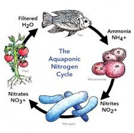

Paz de espírito e Sustentabilidade
É possível conciliar hobby, terapia e produção de alimentos saudáveis em um pequeno espaço dentro de sua casa. A Aquaponia é a chave para essa integração.
De forma simplificada, a Aquaponia é a integração entre a criação de peixes (Aquicultura) e o cultivo de plantas sem solo (Hidroponia). No entanto, ela vai muito além de apenas "juntar peixes e plantas".
Trata-se de um ecossistema em simbiose (ou mutualismo), onde três organismos fundamentais trabalham em equipe: peixes, bactérias nitrificantes e plantas.
 O ciclo biológico: onde a vida se sustenta mutuamente.
O ciclo biológico: onde a vida se sustenta mutuamente.
Como o ciclo funciona?
Os peixes produzem dejetos que geram Amônia, uma substância que em altas concentrações é tóxica para eles. É aqui que entram as bactérias (que vivem nos seus filtros ou mídias). Elas "limpam" a água transformando a amônia em nutrientes.

Transformação química: de resíduo a fertilizante natural.Esses nutrientes são a "comida" perfeita para os vegetais. As raízes das plantas, mergulhadas nessa água, absorvem tudo o que precisam para crescer rápido e com saúde, devolvendo a água purificada para o tanque de peixes.
Monitore a Saúde do seu Sistema
Para o ciclo funcionar, você precisa medir a qualidade da água. Estes são os kits essenciais para qualquer iniciante:


Estrutura Básica: Gravidade e Circulação
Na prática, utilizamos reservatórios (como caixas d'água) e uma bomba de baixo consumo para elevar a água até as plantas. O retorno acontece por gravidade, garantindo a oxigenação constante.
 Engenharia simples: a força da gravidade trabalhando para você.
Engenharia simples: a força da gravidade trabalhando para você.
Seja em canos de PVC ou em camas de cultivo com argila expandida, a Aquaponia é uma verdadeira replicação da natureza em escala residencial.
Agora que você entendeu o conceito, o próximo passo é a execução.